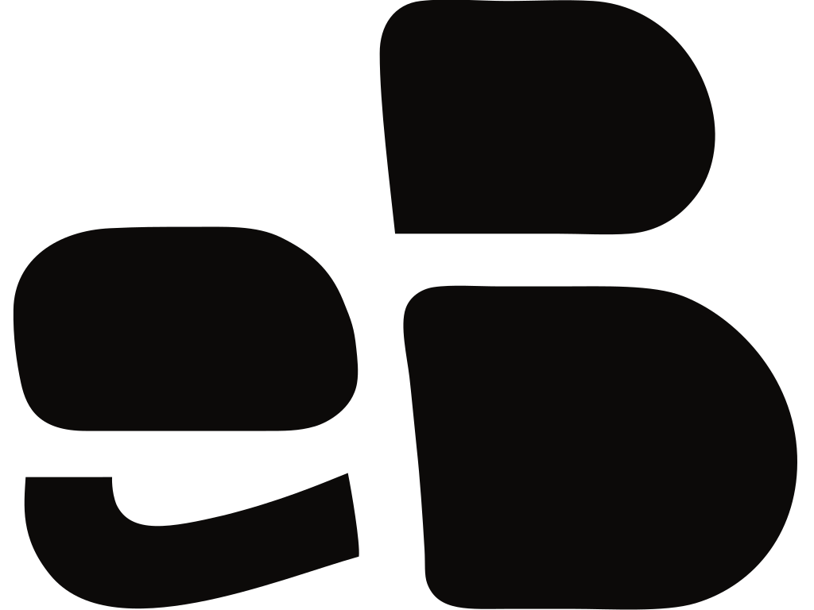
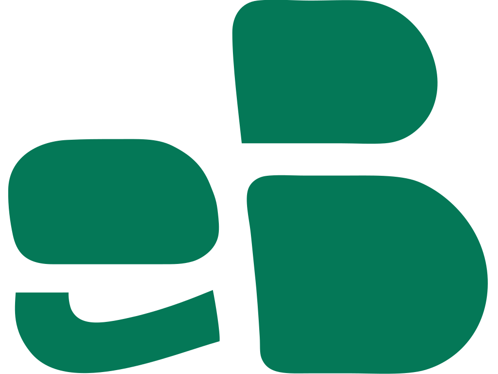
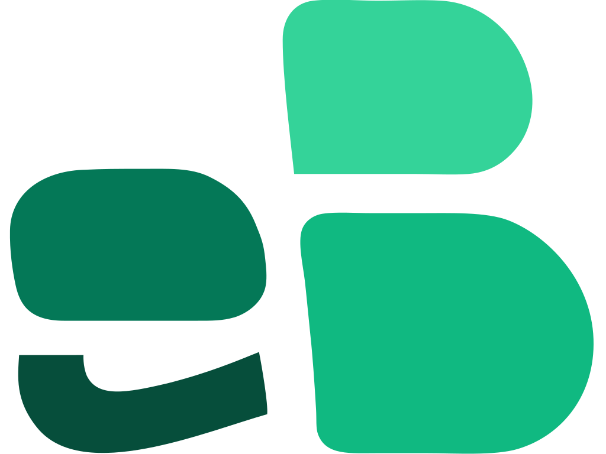
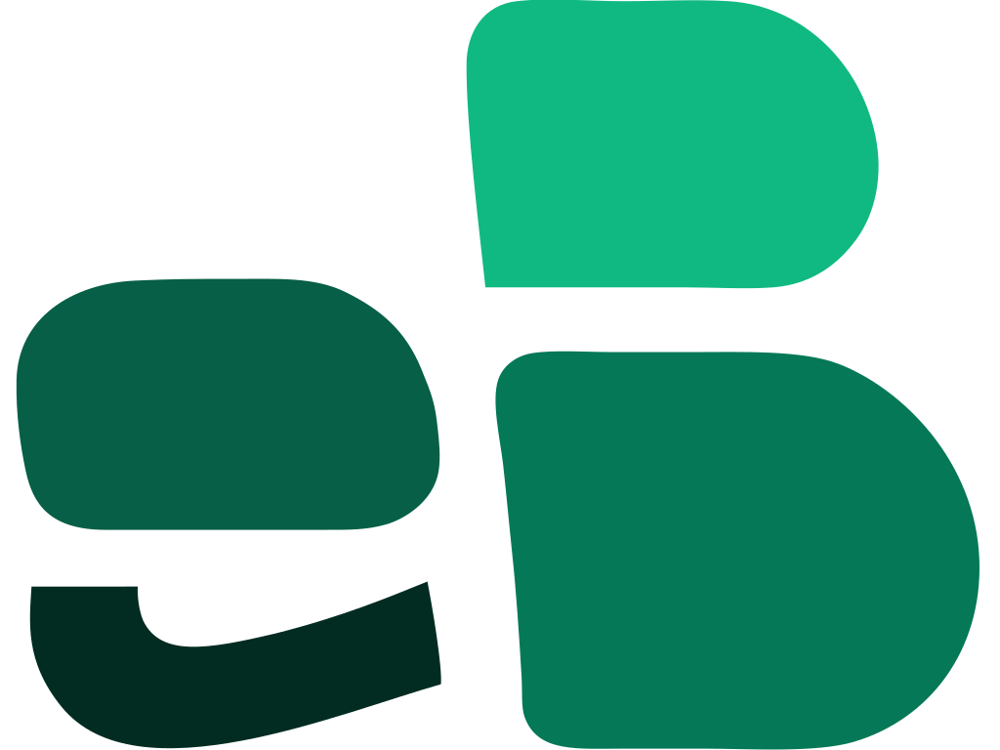
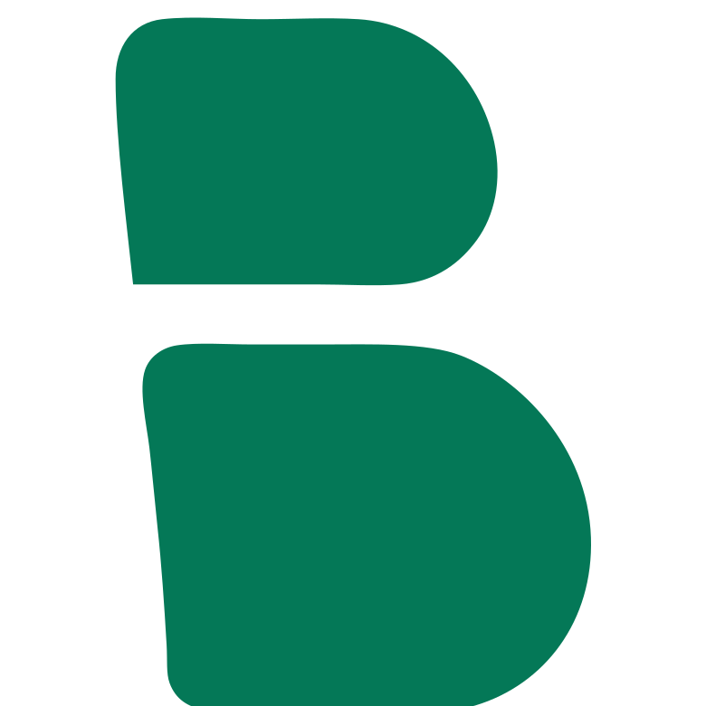

Logo, paleta y reglas de uso. Documento de consulta — ante la duda, aquí está la respuesta.

Monograma e + B en 4 piezas con hairlines entre ellas. La e minúscula transmite accesibilidad y proximidad; la B mayúscula aporta solidez y autoridad. El swoosh en el pie de la e añade carácter tipográfico sin romper la legibilidad.
Transmite: precisión técnica con criterio estético. Posiciona como Tech Architect accesible para autónomos y PYMEs que buscan algo más que una plantilla WordPress.
3 mono (uso diario, 90% de los contextos) + 2 escalas verdes (uso expresivo: hero, redes, portadas).
Uso general. El 80-90% de tus colocaciones del logo deberían ser esta variante.

Sobre fondos oscuros: modo geek, imágenes con contraste oscuro, portadas de video.

Cuando quieres que el logo participe de la paleta de acento sin usar el esquema escalado.

Tonos claros densos (sin pastel). Para contextos expresivos donde quieres que el logo respire color sin perder seriedad.

Profundidad máxima. Para hero de landing, portadas de casos de estudio, presentaciones formales.
Solo las 2 cachas de la B en verde. Esta es la versión oficial que se usa en la pestaña del navegador. El logo eB completo se reserva para app icons y home screens (iOS/Android) donde hay espacio para que se lea.

Test a escalas reales. El logo debe ser legible a 32px — por debajo se usa la variante favicon simplificada (ver Don'ts).
Neutrales cálidos (stone warm) + verde bosque como único acento decorativo. Los semánticos solo se usan para estados reales, nunca como decoración.
#FAFAF9#FFFFFF#F5F5F4#E7E5E4#D6D3D1#080808#0C0A09#44403C#78716C#A8A29E#047857#065F46#D1FAE5#15803D#B45309#B91C1C#1E40AF#A7F3D0#34D399#10B981#047857#065F46#022C22El wordmark "eBecerra" conserva el mismo mix minúscula-mayúscula que el monograma. Mantiene la e accesible y la B del apellido como anclaje.
eBecerra
Sans geométrica moderna de Vercel. Recomendada por coherencia con el stack Next.js. Gratis en Google Fonts.
eBecerra
Neutra, muy versátil, optimizada para pantalla. Alternativa segura. Gratis.
eBecerra
Grotesca premium de Klim. Si quieres salto cualitativo. ~90€ single user.
El logo necesita espacio libre a su alrededor para mantener su presencia. La medida mínima es el ancho del tallo de la B.
Navbar, firmas de email, iconos de app secundarios.
A este tamaño el logo completo pierde detalle. Se usa la variante favicon (solo B verde) — ver app/icon0.svg.
Hero, cabeceras de sección, tarjetas de visita, presentaciones.
Reglas que protegen la consistencia visual de la marca.
Guía consultable de un vistazo.
| Contexto | Archivo | Nota |
|---|---|---|
| Navbar de la web (modo pro) | logo-black.svg |
Altura 32-40px |
| Navbar modo geek | logo-white.svg |
Mismo tamaño |
| Hero de landing | logo-scale-deep.svg |
96-200px, expresivo |
| Portadas de sección / casos | logo-scale-balanced.svg |
Menos intensidad que deep |
| Firma de email | logo-black.svg |
Altura 48-64px |
| Favicon (16-32px) | app/icon0.svg (B verde sin fondo) |
Versión simplificada, piezas fusionadas |
| Avatar de redes sociales | logo-scale-deep.svg o logo-black.svg |
Centrado en canvas cuadrado con padding |
| Presentaciones (Keynote/Slides) | logo-black.svg + wordmark |
Footer o esquina inferior |
| Tarjeta de visita | logo-black.svg |
Impresa, verificar legibilidad BN |
| OG image (Twitter/LinkedIn) | logo-scale-deep.svg sobre warm white |
1200×630, logo a izquierda o centrado |
| Sobre fondo verde (#047857) | logo-white.svg |
Nunca verde sobre verde |
logo-scale-deep.svg sobre warm white para Twitter/LinkedIn previews.